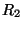

L'exemple typique est le cas de la bactérie Escherichia Coli infectée par le
virus bactériophage
 . Une bactérie infectée peut être dans un des
deux états: lytique, permettant la multiplication du virus et conduisant à sa
propre destruction, ou lysogénique, permettant l'incorporation passive de
l'ADN viral dans son propre ADN, sans multiplication. Soumise à un stress, par
exemple des irradiations UV ou un changement de température, le virus dormant
en état lysogénique peut basculer en état lytique, détruire et quitter la
cellule. Les états lytiques et lysogéniques sont contrôlés par les gènes
et
. Une bactérie infectée peut être dans un des
deux états: lytique, permettant la multiplication du virus et conduisant à sa
propre destruction, ou lysogénique, permettant l'incorporation passive de
l'ADN viral dans son propre ADN, sans multiplication. Soumise à un stress, par
exemple des irradiations UV ou un changement de température, le virus dormant
en état lysogénique peut basculer en état lytique, détruire et quitter la
cellule. Les états lytiques et lysogéniques sont contrôlés par les gènes
et
 (qui code un
(qui code un
 -répresseur) respectivement dont la
régulation se fait dans des régions promotrices. Chaque gène contrôle
négativement l'autre gène.
-répresseur) respectivement dont la
régulation se fait dans des régions promotrices. Chaque gène contrôle
négativement l'autre gène.
Pour modéliser la bistabilité de tels réseaux, deux modèles ont été proposés. Ces deux modéles sont des systèmes autocatalytiques (une composante contrôle directement ou indirectement sa propre production). Le premier modèle est à une composante, et le deuxième à deux composantes.
Dans le modèle à une composante , la bistabilité vient du fait qu'à faible concentration, se dégrade avant de commencer à stimuler sa production, à des concentrations plus grandes, active les centres promoteurs de sa propre production et finalement à de très grandes concentrations les centres promoteurs sont bloqués.
Dans le modèle à deux composantes
et
, chacune des composantes bloque le
promoteur de l'autre. Le système peut exister dans deux états:
riche en
, pauvre en
et le contraire. Le modèle à deux composantes
s'applique naturellement à la bactérie E.Coli dont l'état est contrôlé par les
deux gènes
et
 .
.